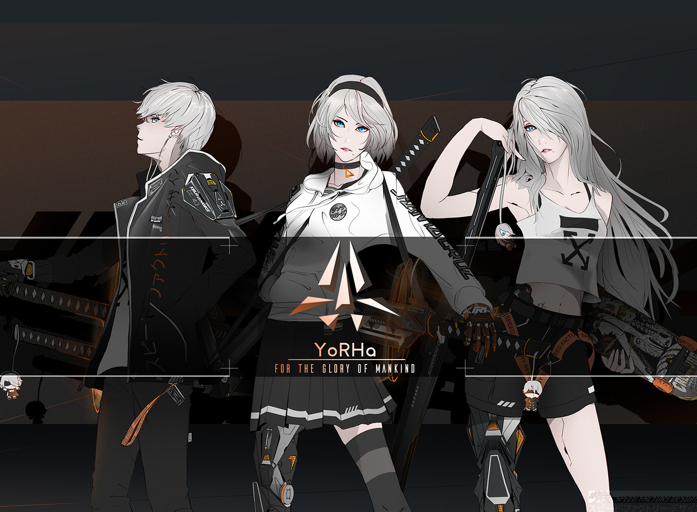
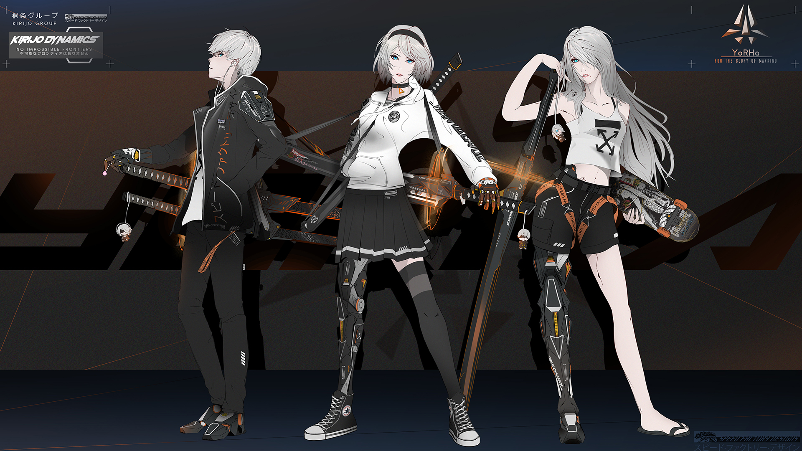
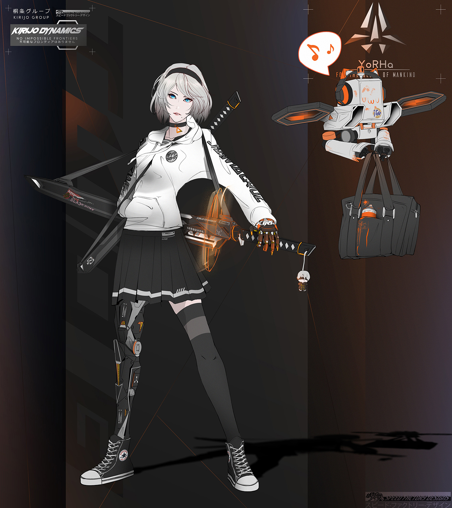
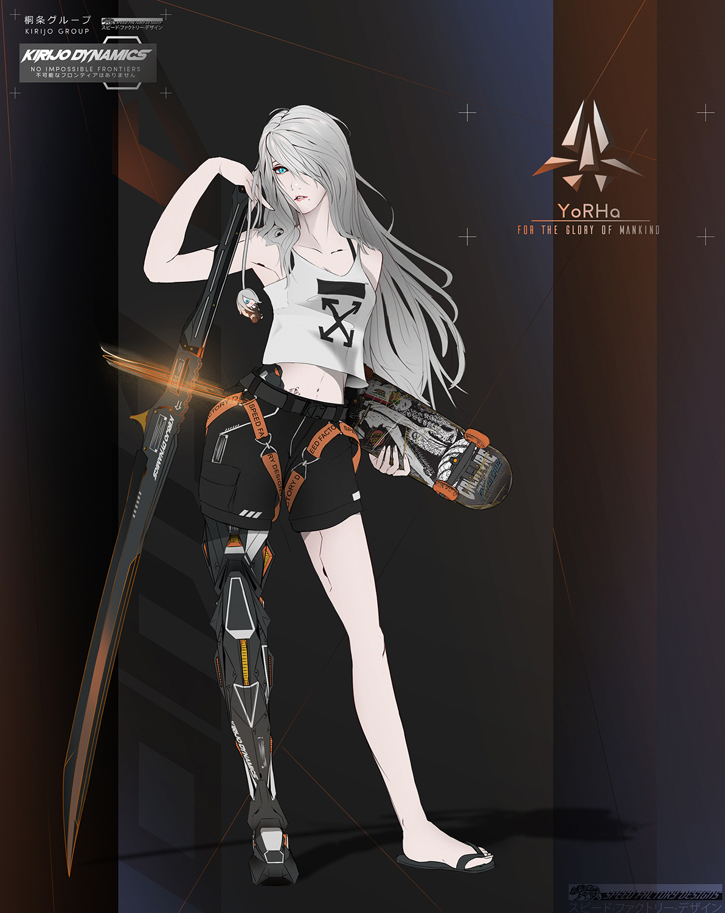

Class of YoRHa
Inspired by the growing resentment and unrest in modern day youth against the power structures that control the world. Real world brands ground and make the near cyberpunk world real and believable. Special attention given to varying line art to describe texture, weight, and structure.
(Raymond Lam, Photoshop, 2019)

Lineup

2b

A2

9s